PROportions of Variants of Concern using counts, coverage, and a lineage definition matrix.
Builds and diagnoses a model based on:
- Counts: The number of times a given mutation was observed.
- Coverage: The number of times the position of a given mutation was read.
- Mutation names: whatever format you want, as long as they match the names in the lineage definition matrix.
- Lineage definition matrix: A matrix where the row names are lineage, the column names are mutations, and the entries are 1 if the row lineage has the column mutation and 0 otherwise.
- For example: Usher Barcodes
- All current methods accept fractional entries.
Usage
There are two steps to using this software: create the lineage definitions and run the model(s).
If not specified, the lineage definitions uses hardcoded definitions from the cov-lineages/constellations repo, which contains the representative mutations that were identified by the PANGO team. The lineage definitions must have names that match what exists in the data.
#library(provoc)
devtools::load_all()
data(Baaijens)
b1 <- Baaijens [Baaijens$sra == Baaijens$sra[1], ]
b1$mutation <- parse_mutations(b1$label)
head(b1[, c("count", "coverage", "mutation", "label")]) count coverage mutation label
1 14458 14818 aa:S:D614G ~23403G
2 10431 32699 C12025T ~12025T
3 759 9577 G29266A ~29266A
4 23329 23690 aa:orf1a:T265I ~1059T
5 6935 32631 aa:M:R44S ~26654T
6 13866 27715 aa:orf1a:L3352F ~10319TThe main fitting function is designed to mimic glm(), with formula notation that emphasizes the connection to binomial GLM models. The bootstrap_samples argument is optional, and is used to calculate confidence intervals and correlation of the parameters.
res <- provoc(
formula = count / coverage ~ B.1.1.7 + B.1.429 + B.1.617.2 +
B.1.427 + AY.4 + P.1,
data = b1,
bootstrap_samples = 100)
resCall: count/coverage ~ B.1.1.7 + B.1.429 + B.1.617.2 + B.1.427 + AY.4 +
P.1
Mutations in lineage definitions: 325
Mutations used in analysis/mutations in data:
74/772
All models converged.
Top 5 lineages:
rho ci_low ci_high lineage
5 0.515 5.09e-01 5.20e-01 AY.4
2 0.33 3.23e-01 3.38e-01 B.1.429
4 0.124 1.18e-01 1.30e-01 B.1.427
1 0.008 7.17e-03 8.05e-03 B.1.1.7
3 <0.001 1.06e-09 9.55e-05 B.1.617.2We have created a class for provoc objects with convenient methods. For example, plotting the results is achieved as follows:
plot(res)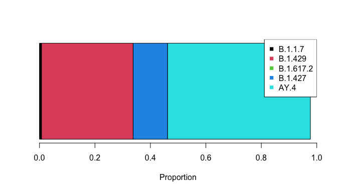
We use the convention of autoplot() as a function that creates a ggplot2 plot based on a particular type of data. This allows for all of ggplot2’s fanciness on top of a pre-made plot.
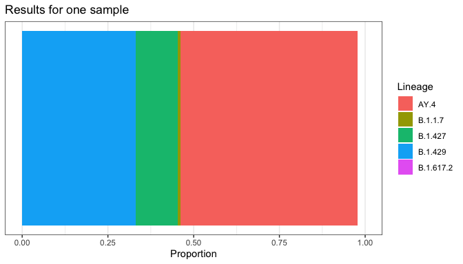
plot_resids(res)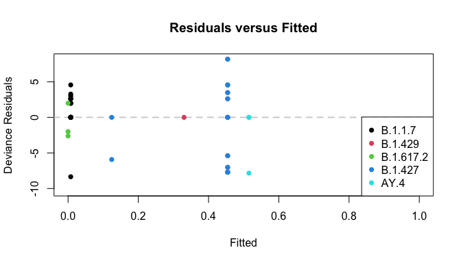
summary(res)Call:
count/coverage ~ B.1.1.7 + B.1.429 + B.1.617.2 + B.1.427 + AY.4 +
P.1
Deviance Residuals:
Min. 1st Qu. Median Mean 3rd Qu. Max.
-10.3051 -1.9998 0.0000 -0.7594 0.0000 8.1775
Mutations in lineage definitions: 325
Mutations used in analysis/mutations in data:
74/772
Coefficients:
rho ci_low ci_high lineage
1 7.599439e-03 7.173164e-03 8.049933e-03 B.1.1.7
2 3.301205e-01 3.233184e-01 3.375335e-01 B.1.429
3 9.512833e-09 1.061044e-09 9.550969e-05 B.1.617.2
4 1.242872e-01 1.178179e-01 1.301443e-01 B.1.427
5 5.150303e-01 5.094964e-01 5.196631e-01 AY.4
Correlation of coefficients:
B.1.1.7 B.1.429 B.1.617.2 B.1.427 AY.4
B.1.1.7 1.00000000 0.02244543 0.17031546 0.06300633 -0.16706950
B.1.429 0.02244543 1.00000000 0.14322947 -0.90597430 -0.08516734
B.1.617.2 0.17031546 0.14322947 1.00000000 -0.10752381 -0.07479276
B.1.427 0.06300633 -0.90597430 -0.10752381 1.00000000 0.14240372
AY.4 -0.16706950 -0.08516734 -0.07479276 0.14240372 1.00000000
plot_lineages(res)
Multiple Samples
# First thirty samples from Baaijens
b2 <- Baaijens [Baaijens$sra %in% unique(Baaijens$sra)[1:30], ]
b2$mutations <- parse_mutations(b2$label)
head(b1[, c("count", "coverage", "mutation", "label", "sra")]) count coverage mutation label sra
1 14458 14818 aa:S:D614G ~23403G SRR15505102
2 10431 32699 C12025T ~12025T SRR15505102
3 759 9577 G29266A ~29266A SRR15505102
4 23329 23690 aa:orf1a:T265I ~1059T SRR15505102
5 6935 32631 aa:M:R44S ~26654T SRR15505102
6 13866 27715 aa:orf1a:L3352F ~10319T SRR15505102Note the “by” argument below. This tells provoc() to fit the model separately to each sample defined by the by column. Since there are 30 samples, the model takes a while to run, hence why there are no bootstrap samples here.
system.time(
res <- provoc(
formula = count / coverage ~ B.1.1.7 + B.1.429 + B.1.617.2 +
B.1.427 + AY.4 + P.1,
data = b2,
by = "sra",
bootstrap_samples = 0)
)
resCall: count/coverage ~ B.1.1.7 + B.1.429 + B.1.617.2 + B.1.427 + AY.4 +
P.1
Mutations in lineage definitions: 325
Summary of percent of mutations in data used:
Min. 1st Qu. Median Mean 3rd Qu. Max.
0.09585 0.09585 0.09585 0.09585 0.09585 0.09585
All models converged.
Top 6 lineages:
rho ci_low ci_high lineage sra avg_spot_len sample_name bases
61 0.899 NA NA B.1.1.7 SRR15505114 302 FX2 385650980
15 0.846 NA NA AY.4 SRR15505104 302 DR2 412520222
139 0.84 NA NA B.1.427 SRR15505129 302 FE1 339620744
114 0.709 NA NA B.1.427 SRR15505124 302 FK2 433136554
50 0.695 NA NA AY.4 SRR15505111 302 GC1 484282368
35 0.687 NA NA AY.4 SRR15505108 302 GF2 615765014
bioproject date
61 PRJNA741211 2021-04-11
15 PRJNA741211 2021-01-15
139 PRJNA741211 2021-03-16
114 PRJNA741211 2021-03-24
50 PRJNA741211 2021-04-17
35 PRJNA741211 2021-04-23
plot_lineages(res)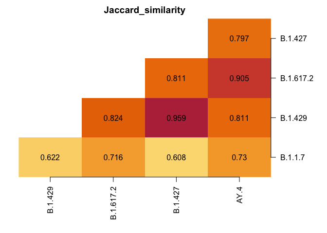
The plotting functions above work as expected.
plot(res)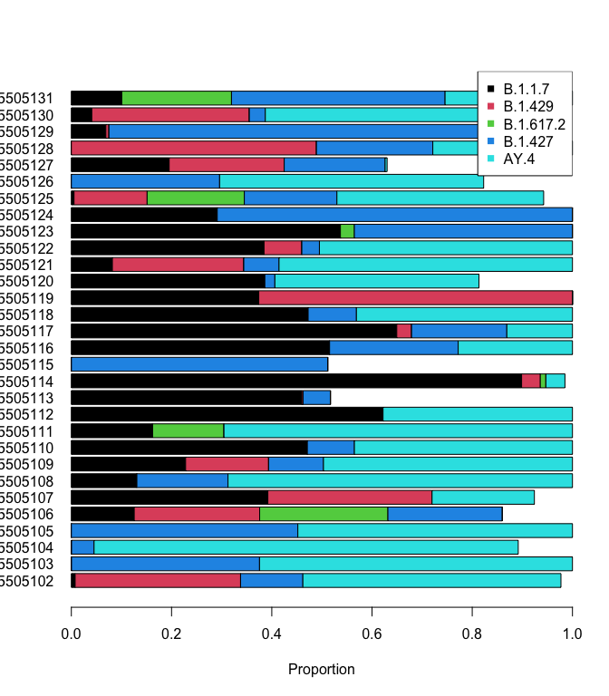
plot_resids(res)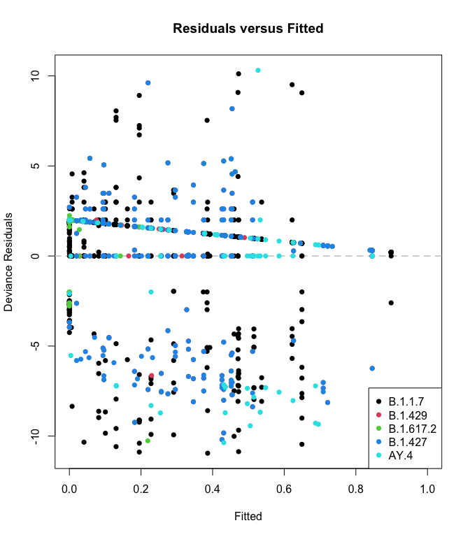
autoplot(res)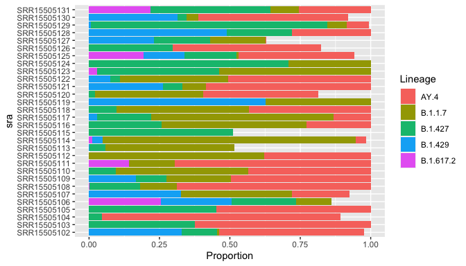
In addition, we’ve added special functionality for data with a “date” column:
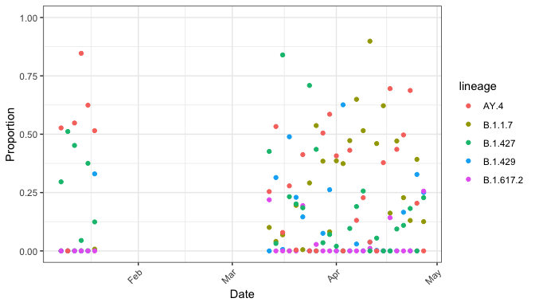
Since autoplot() returns a ggplot2 object, you can use all your knowledge of ggplot2:
autoplot(res, date_col = "date") +
facet_wrap(~ lineage, nrow = 1) +
labs(title = "Proportions of Lineages over Time") +
theme(axis.text.x = element_text(angle = 45, hjust = 1))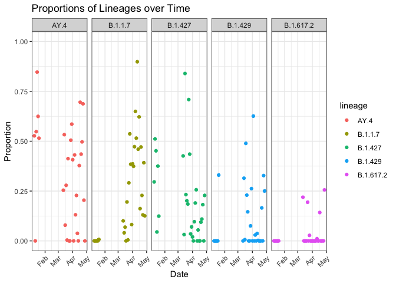
Finally, the residual plot still works (although it’s a bunch of samples stuffed into one plot, so its use is limited.)
plot_resids(res)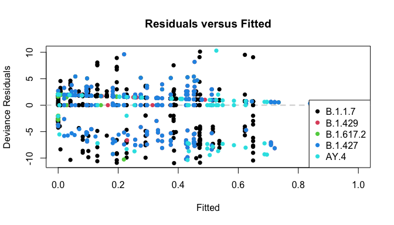
Searching for Different Lineages
library(patchwork)
res_with <- provoc(cbind(count, coverage) ~ B.1.1.7 + B.1.429 + B.1.617.2 + B.1.427,
data = b2, by = "sra",
verbose = FALSE, bootstrap_samples = 0)
res_with$date <- lubridate::ymd(res_with$date)
res_without <- provoc(cbind(count, coverage) ~ B.1.429 + B.1.617.2 + B.1.427,
data = b2, by = "sra",
verbose = FALSE, bootstrap_samples = 0)
res_without$date <- lubridate::ymd(res_without$date)
g_with <- autoplot(res_with, date_col = "date") +
scale_fill_manual(values = 2:5)
g_without <- autoplot(res_without, date_col = "date") +
scale_fill_manual(values = 3:5)
g_with / g_without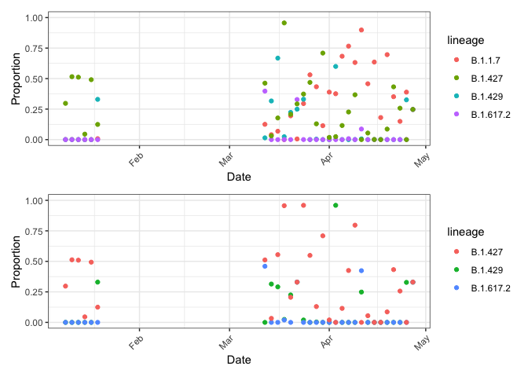
Notice two important points:
- Since proportions can’t sum to greater than one, including B.1.1.7 when it should be excluded means it will take away from the other lineages!
- Erroneously increasing one means decreasing true lineages.
- Due to shared mutations, excluding B.1.1.7 when it should be included means other lineages increase to make up for it.
- Erroneously decreasing one means increasing other lineages.
provoc also accepts the ~ . formula notation. This is useful if you want to manipulate the lineages in the lineage definitions matrix, which is easier programmatically than dealing with formulae in R. The filter_lineages() function will remove mutations that are not present in any of the remaining lineages.
lineage_defs <- provoc::usher_barcodes(path = "working") |>
filter_lineages(c("B.1.1.7", "B.1.617.2", "B.1.427",
"B.1.429", "AY.4", "BA.4", "BA.5"))With these definitions, we can just use all of them:
res_all <- provoc(count / coverage ~ ., data = b1,
bootstrap_samples = 0,
lineage_defs = lineage_defs)
plot_lineages(res_all)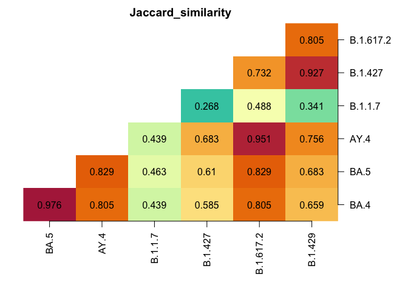